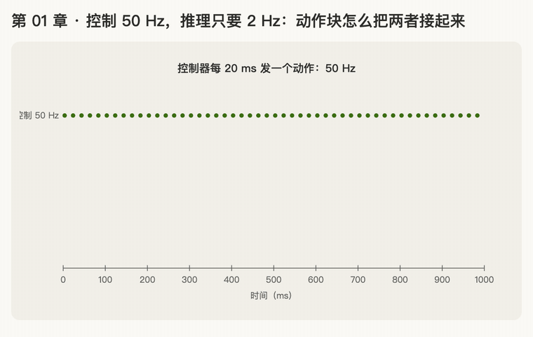
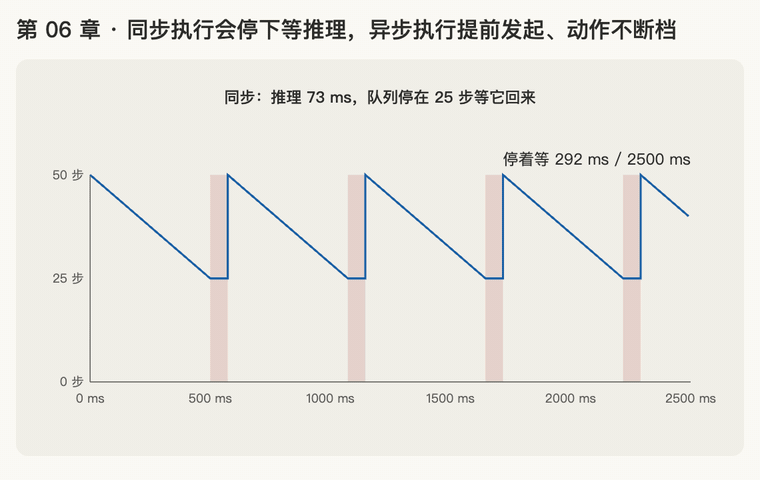
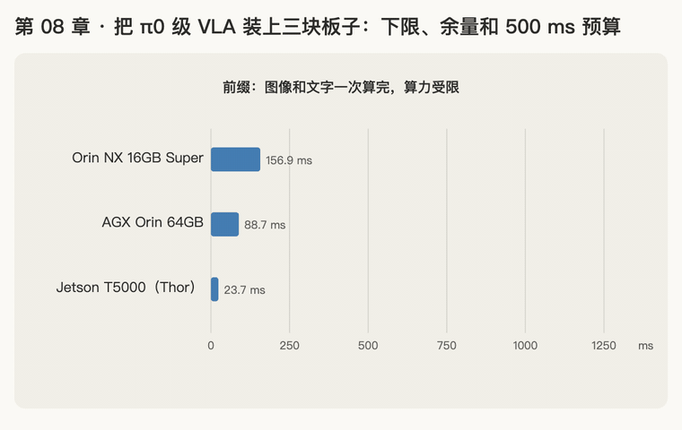

AI Infra 扩展 · 机器人端侧推理 · 讲义目录
8 章 · 8 个动画（GIF + 可交互页面）· 10 张静态图 · 16 张复习卡片 · 覆盖 VLA 在机器人机载算力（Jetson Orin / Thor）上部署的约束、选型、估算、量化、推理引擎、实时调度、功耗与端云分工
这本书讲什么
《深入理解 AI Infra》主要讲数据中心，端侧只在第 12 章讲了手机和个人电脑。这本扩展讲机器人：同一个 VLA 放到机器人身上，一次只有一个请求、必须准时、电和散热有限、网会断。从"机器人上的推理和云上有什么不同"讲起，一步步走到"给一个 3.3B 的 VLA 挑板子、算预算、定优化顺序、上车前检查什么"。
- 适合谁：学过 Transformer 基础（q / k / v、多头注意力）、知道 VLA 大致是什么的人；带宽、算力、量化这些概念在用到的那一章现场讲。
- 读完能做什么：拿到一个 VLA 和一块 Jetson，不跑代码先用几个数估出它最快多少 Hz、放不放得下、余量够不够，并知道按什么顺序优化、怎么验收。
- 怎么读：按章顺序读。每章先看讲解和动画，再自己做练习，最后用复习卡片隔几天考自己。
讲解的特点
- 一次一小步：每个概念按"白话类比 → 公式（每个符号说清楚怎么读）→ 小数字亲手算一遍"讲。
- 每章一个动画：关键原理配可交互页面（▶ 播放、→ 单步、↺ 从头，带滑块），GIF 嵌在讲义里。
- 数字都有出处：论文数字标本地文本行号（π0、OpenVLA、GR00T N1、SmolVLA、GR00T 2 白皮书），硬件参数来自 NVIDIA 官方页面（附录 · 材料来源，2026-11-26 核对）；编的数都写明"编的"。
- 保留真实的学习过程：练习与作答记录里是学习时的原话、对错和点评（目前练习都待作答）。
- 术语不设门槛：缩写第一次出现就给英文全称并逐词解释，全书缩写见缩写与术语表。
- 每章都有代码对照：纯 Python 把讲义里的数字算一遍，配测试核对和讲义一致；只算讲过的例子，不提前给练习答案。
- 每章收尾有口诀：全部口诀汇总在本页末尾。
示例动画
 |
 |
 |
| 第 1 章 控制节拍与推理时限：控制 50 Hz，推理只要 2 Hz。讲义 · ▶ 交互 | 第 3 章 带宽下限：OpenVLA 一步把 15 GB 读 7 遍。讲义 · ▶ 交互 | 第 6 章 同步与异步：提前发起，动作不断档。讲义 · ▶ 交互 |
 |
 |
 |
| 第 4 章 量化：位数越少格子越粗。讲义 · ▶ 交互 | 第 5 章 推理引擎：Thor 上 720 → 124 ms。讲义 · ▶ 交互 | 第 8 章 综合案例：三块板子的下限和余量。讲义 · ▶ 交互 |
其他入口
- 复习卡片：../review.md（16 张，对 AI 说"复习"开始考）
- 缩写与术语表：appendix-glossary.md
- 材料来源：appendix-sources.md
- 学习计划与动手里程碑：../study-plan.md
- 代码对照：
ai-infra-edge/solutions/chapter-code/（uv run pytest；notebook 在notebooks/） - 母书：《深入理解 AI Infra》讲义，端侧相关原文是第 12 章 §12.1.5
全流程总览
任务：一个 VLA 要装上机器人
│
① 约束：一次 1 个请求、必须准时、电热有限、会断网 第 1 章
│ 时限 = 动作块用完之前（π0：每执行 25 步 → 500 ms）
② 挑板子：容量、带宽、功率三个数；官方 TOPS 先打折 第 2 章
│
③ 估下限：前缀按算力，逐步生成按带宽；先看放不放得下 第 3 章
│
④ 不够快就优化：
│ 量化（省带宽 / 算力，但要验收） 第 4 章
│ TensorRT + CUDA Graph（Thor 上 720 → 124 ms） 第 5 章
│
⑤ 调度：异步执行 L ≤ g·H·Δt，RTC 平滑衔接，按 p99 留余量 第 6 章
│
⑥ 功耗与端云：E = P·t；危险、时限紧的留身上，慢的上云带退路 第 7 章
▼
⑦ 综合：预算 ÷ 下限看余量 → 优化顺序 → 上车检查清单 第 8 章
| 步 | 做什么 | 为什么 |
|---|---|---|
| ① 约束 | 找出时限、batch、功率、断网四个条件 | 机器人和数据中心要优化的东西不一样 |
| ② 挑板子 | 看容量、带宽、功率 | batch = 1 时带宽比算力更早卡住 |
| ③ 估下限 | 两个下限取大，再看容量 | 不跑代码先排除不可能的方案 |
| ④ 优化 | 先不改输出的，再改输出的 | 出了问题能定位 |
| ⑤ 调度 | 异步、平滑衔接、按 p99 | 推理比控制慢得多，动作不能断 |
| ⑥ 功耗与端云 | 算能耗，分清放哪 | 电池有限、网络会断 |
| ⑦ 综合 | 余量 → 顺序 → 清单 | 把前面全部串起来做决定 |
目录
| 章 | 主题 | 一句话精要 | 动画 | 卡片 | 状态 |
|---|---|---|---|---|---|
| 01 | 机器人上的推理：和云上有什么不同 | 一次 1 个请求、必须准时；动作块把 2 Hz 推理接到 50 Hz 控制上 | ▶ | E01–E02 | 📝 已写，练习待作答 |
| 02 | 端侧芯片：看懂 Jetson 的三个数 | 统一内存先扣系统；TOPS 稀疏先除二再乘利用率 | ▶ | E03–E04 | 📝 已写，练习待作答 |
| 03 | 先算下限 | OpenVLA 在 AGX Orin 上最多 1.95 Hz；前缀算力卡、生成带宽卡 | ▶ | E05–E06 | 📝 已写，练习待作答 |
| 04 | 量化 | 位数减半字节减半；OpenVLA int8 变慢反而做坏 | ▶ | E07–E08 | 📝 已写，练习待作答 |
| 05 | 推理引擎 | TensorRT 砍掉一半；GR00T 2 在 Thor 上 720 → 124 ms | ▶ | E09–E10 | 📝 已写，练习待作答 |
| 06 | 实时调度 | 异步 L ≤ g·H·Δt；新旧块用 RTC 接平；按 p99 留余量 | ▶ | E11–E12 | 📝 已写，练习待作答 |
| 07 | 功耗、散热和端云分工 | E = P·t；上云平均快、拖尾长；危险的留身上 | ▶ | E13–E14 | 📝 已写，练习待作答 |
| 08 | 综合案例：π0 级 VLA 上车 | 余量 = 预算 ÷ 下限，不到 5 倍先优化；三条退路 | ▶ | E15–E16 | 📝 已写，练习待作答 |
后续大纲
讲到再微调，目前没写：
- 视觉编码器单独优化：多路相机的图像 token 怎么削（token 剪枝、降分辨率）；
- 其他平台（RK3588、高通、地平线）：工具链和 Jetson 的差别，等核对过官方数据表再写；
- 在真机上测一次：AI-E1 / AI-E2 里程碑做完后，把实测数据补进第 3、8 章。
口诀汇总
第 1 章
云上一锅炒得多，车上一份要准时；
动作成块换时间，块没用完就回来；
批量为一没人摊，带宽先算别忘掉；
电热网断都要想，出错先要能停好。
第 2 章
内存大家一块用，先扣系统再算模型；
容量带宽加功率，挑板先看这三个；
稀疏先除二，再乘利用率；
精度不同不能比，带宽口径最老实。
第 3 章
搬砖砌墙看更慢，读算两限取其大；
一步七个 token，权重读七遍；
前缀 token 多算力卡，逐个生成带宽卡；
先问放不放得下，再问跑得有多快。
第 4 章
位数减半字节减半，带宽内存一起省；
最大绝对除最大整，四舍五入对格子；
只压权重省带宽，连激活压才省算；
变慢一样会做坏，数值仿真加真机。
第 5 章
一件一结账太慢，整单提交 GPU 不等；
合并挑核定精度，引擎认机不认人；
TensorRT 砍一半，Graph 收尾剩不多；
量化少步还要验，形状固定才能录。
第 6 章
同步做完停下等，推理越慢停越多；
异步剩 g 就发起，L 小于 g H 乘 Δt；
新旧两块要接平，重叠平均或 RTC；
慢的想来快的动，预算看 p99。
第 7 章
能量等于功率乘时间，续航要算总功率；
档位换速度，热了会降频；
上云平均快，拖尾丢包断网才要命；
危险紧的留身上，慢的上云带退路。
第 8 章
先定预算再定容量，三块板子都放下；
前缀按算力，动作按带宽，加起来是下限；
预算除下限看余量，不到五倍先优化；
不改输出的先做，超时断网要回滚。